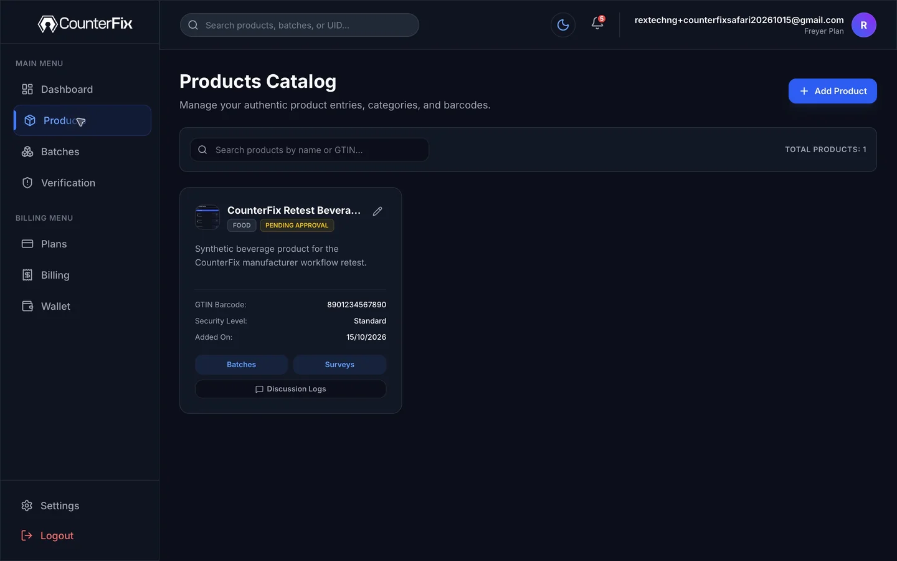
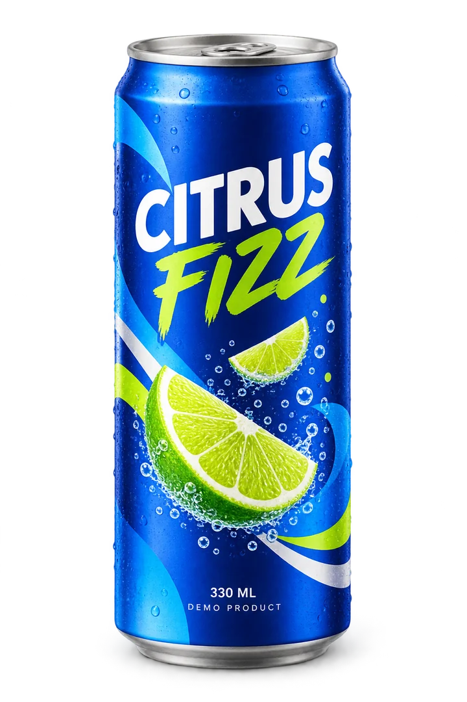
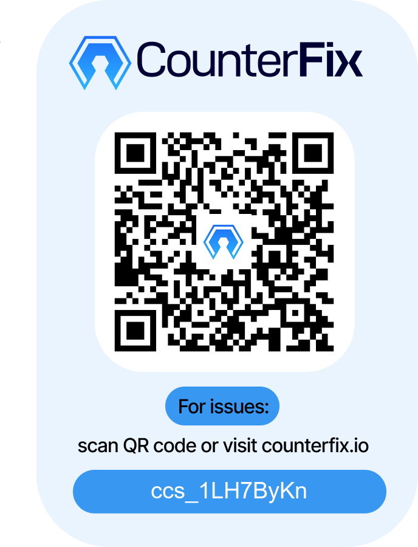
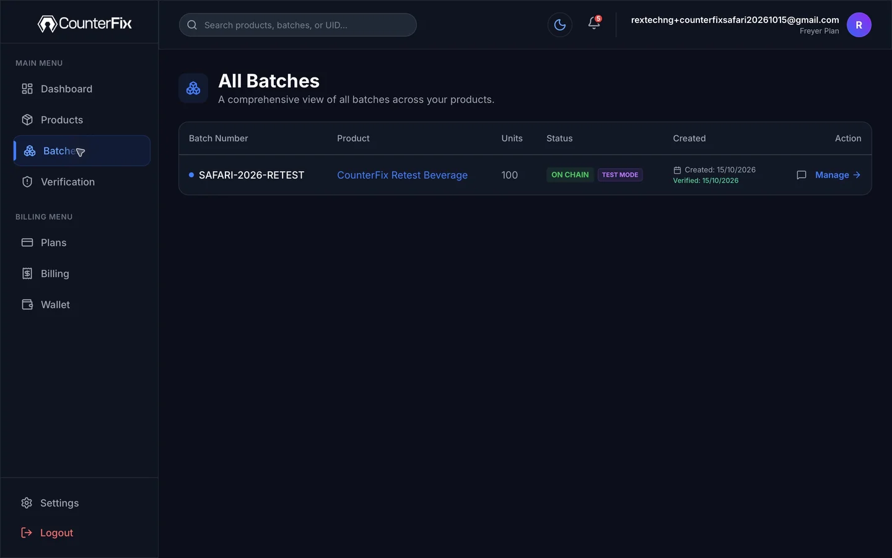
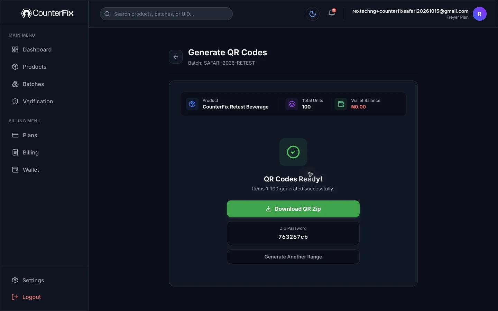
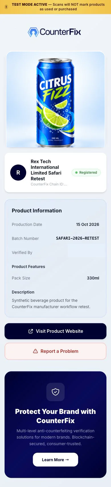
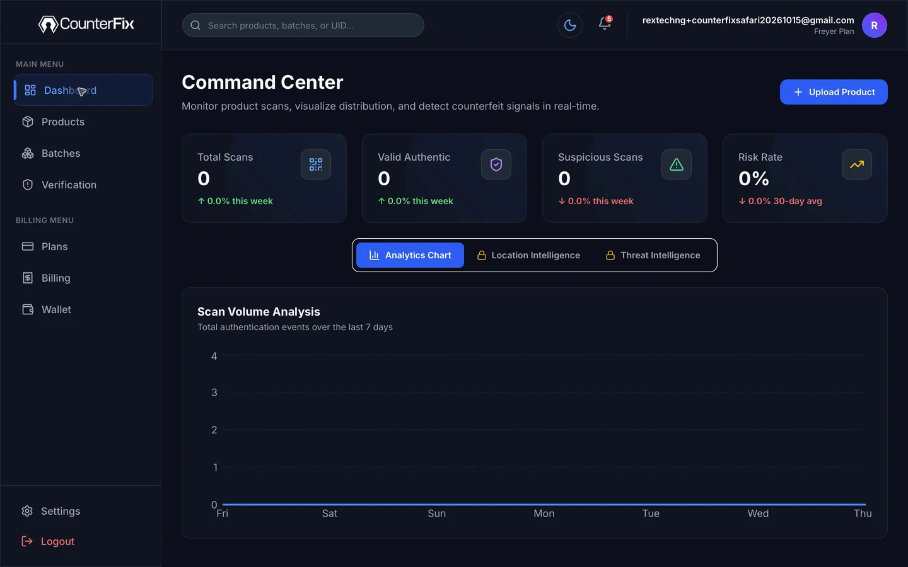

01
01 · Tell us what you make
Add your product.
Enter the product details you want customers to see when they scan.

For businesses that make products, big or small
When buyers cannot tell your pack from a look-alike, you can lose a sale or their trust. CounterFix gives each pack its own QR code, so a customer can scan to see the product and batch you registered and complete a verification check.
Start with one product and one batch. A free plan is available.


From “trust the label” to “scan and check the pack.”
Here is how you get there
After your business is approved, add a product and batch, generate a different code for each pack, and put the codes on your labels.
01 · Tell us what you make
Enter the product details you want customers to see when they scan.

02 · Group the packs you are making
Record the details for this production run so each pack is linked to the right batch.

03 · Give each pack its own check
Generate a different code for each pack, then add the codes to your labels or packaging using a printing process that fits your business.

Why the code on each pack matters
A shared QR code can show a product page, but it cannot tell one pack from another. CounterFix Dual Defender links the code on an individual pack to the product and batch you registered.
Now put yourself in the customer’s shoes
A scan opens the CounterFix check for that pack. The customer can see the product and batch information you provided and follow the steps to complete verification.
The screen shown is an illustrative Test Mode product-information check. It does not represent a purchase-verification or reward flow.

Keep it manageable as you grow
Manage your products, batches and generated codes from one CounterFix workspace. Begin with the next batch and follow the same steps as your business grows.
Create your account
A practical starting point
You can begin with one product and one batch. There is no need to move your entire catalogue at once.
A free plan is available. Paid subscriptions are offered with monthly and yearly options.
Product, code-generation and verification activity may carry charges, depending on your setup.
Review current plan inclusions, pricing and applicable activity charges during setup before preparing a live batch.
Create your accountClear answers before the first batch
Plain answers for production, quality, brand and business teams.
No. The QR is what the customer scans. Dual Defender is the CounterFix system working behind it, linking the pack check to the product, batch and individual unit record.
Yes. Generated codes can be incorporated into production-line printing or other established printing methods. The exact setup is matched to the manufacturer’s process.
Yes. CounterFix is designed to generate a distinct code for every unit in a batch, with each code applied to the pack it belongs to.
They reach the product-information check for the code on their pack, including the product and batch details the manufacturer chose to make available.
Yes. Set up one product and the next batch you want to make checkable, then add more products and batches when you are ready.
No. CounterFix connects a pack to its recorded product and batch information. It does not guarantee authenticity, eliminate counterfeiting or replace required registrations and certifications.
Start with the product you already make
Begin with one product and one batch. Give each pack a distinct code, then give your customers a simple way to check the details you registered.
Create your account